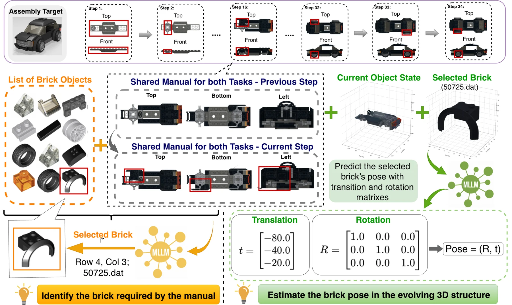
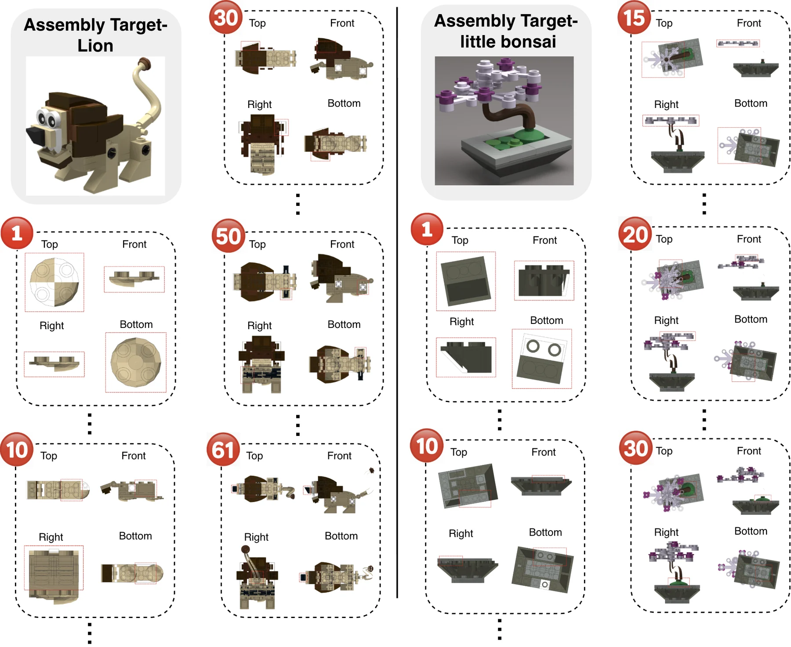
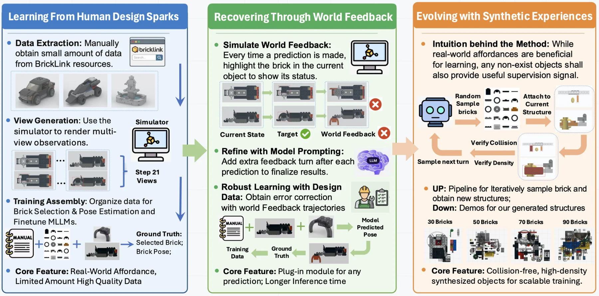
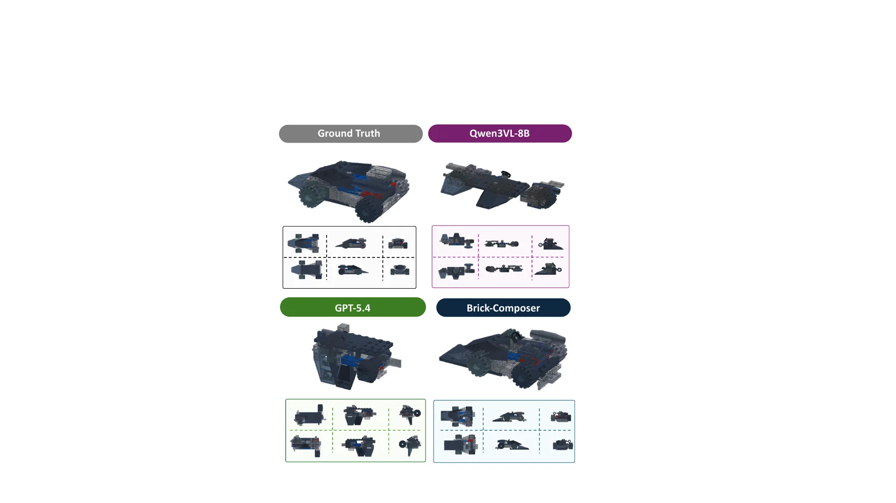
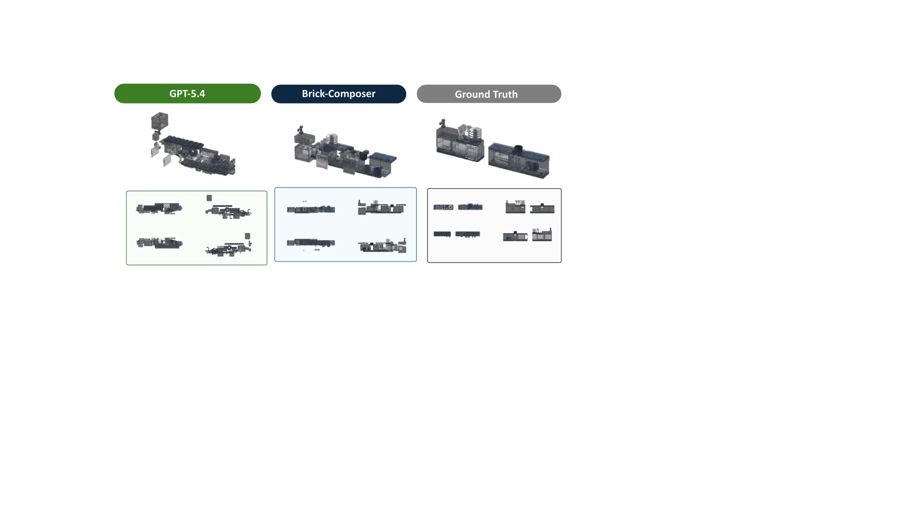
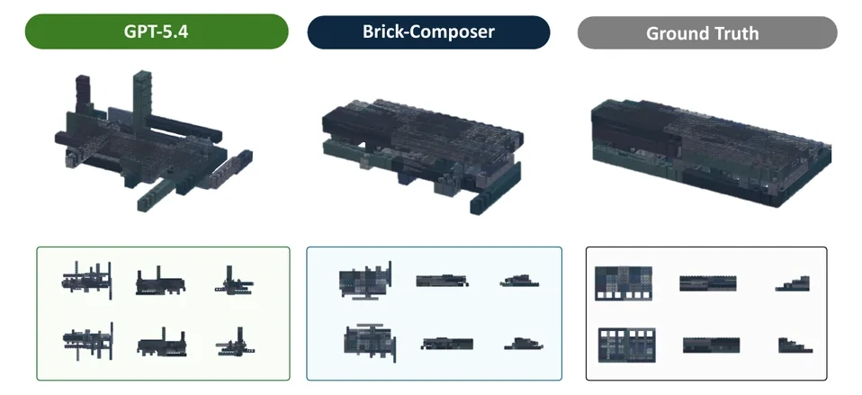
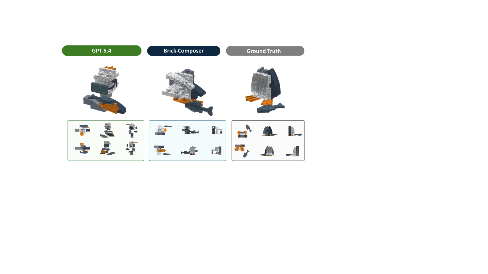
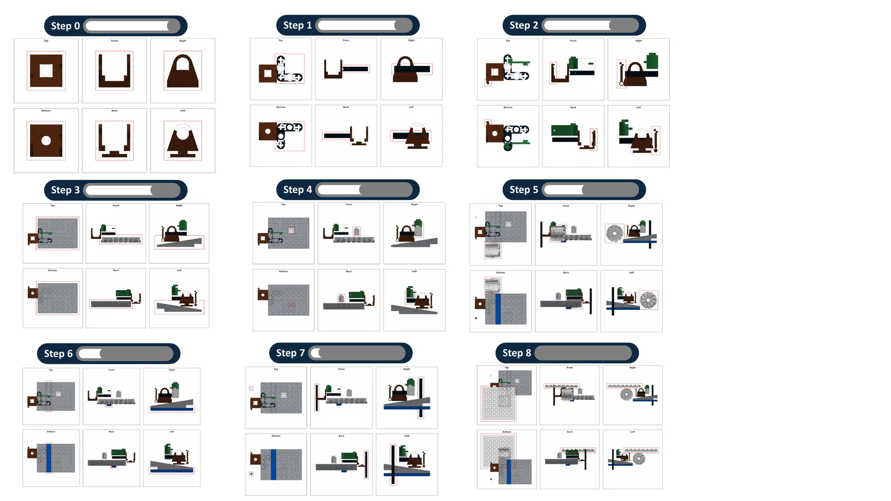

Brick-Composer: MLLMs Construct Everything from Building Blocks
1UIUC 2Stevens Institute of Technology 3Northwestern University

Abstract
We dream of AI agents that can read arbitrary designs and construct real-world objects from reusable building blocks. As a first step toward this vision, we study whether multimodal large language models (MLLMs) possess the visual grounding and spatial reasoning capabilities required for brick assembly. We formulate brick assembly as a sequential decision-making problem, where each step involves two subtasks: brick selection, identifying the target brick from candidate components, and brick pose estimation, predicting where and how the selected brick should be placed.
To support this study, we introduce BC-Bench (Brick Construction Benchmark), a benchmark for evaluating MLLMs on assembly with diverse bricks. We further propose Brick-Composer, a learning framework that equips MLLMs with assembly skills through Human Design Sparks, World Feedback, and Synthetic Experience. Brick-Composer improves brick selection accuracy by over three times, substantially reduces pose estimation errors, and raises strict step-level assembly success from less than 1% to around 15%.
BC-Bench: Assembly with Diverse Bricks
BC-Bench evaluates whether MLLMs can follow step-wise assembly manuals with diverse LEGO-style parts. Each step requires the model to interpret multi-view manual images, identify the next brick from visually similar candidates, and infer the target 3D pose in an evolving structure.

Brick-Composer Learning Framework
Brick-Composer combines three complementary sources of supervision: affordance-rich human-designed assemblies, simulator-based world feedback for error recovery, and procedurally generated synthetic experiences for scalable spatial learning.

Main Results
The tables below reproduce the full final result tables from the paper, including both overall-average performance and best-object performance.
| Model | Overall Average | Best Object Performance | ||||||
|---|---|---|---|---|---|---|---|---|
| Selection ↑ Acc. (%) |
PE Trans. ↓ Err. (LDU) |
PE Rot. ↓ Err. (°) |
Step-Wise ↑ SR (%) |
Selection ↑ Acc. (%) |
PE Trans. ↓ Err. (LDU) |
PE Rot. ↓ Err. (°) |
Step-Wise ↑ SR (%) |
|
| Gemma-3-12B | 4.35 | 269.09 | 63.00 | 0.09 | 17.24 | 41.86 | 12.86 | 2.22 |
| InternVL-3.5-8B | 13.24 | 221.69 | 88.43 | 0.00 | 31.25 | 41.54 | 35.00 | 0.00 |
| Qwen-3-VL-8B | 22.76 | 210.14 | 62.47 | 0.36 | 55.17 | 43.81 | 12.86 | 4.44 |
| Qwen-3.5-VL-27B | 37.44 | 314.32 | 82.94 | 0.18 | 75.86 | 64.47 | 34.84 | 4.44 |
| GPT-5.4 | 43.88 | 310.78 | 74.85 | 0.18 | 93.10 | 67.94 | 40.00 | 2.22 |
| Approach | Overall Average | Best Object Performance | ||||||
|---|---|---|---|---|---|---|---|---|
| Selection ↑ Acc. (%) |
PE Trans. ↓ Err. (LDU) |
PE Rot. ↓ Err. (°) |
Step-Wise ↑ SR (%) |
Selection ↑ Acc. (%) |
PE Trans. ↓ Err. (LDU) |
PE Rot. ↓ Err. (°) |
Step-Wise ↑ SR (%) |
|
| Performance Comparison of Learning Approaches for Model: Gemma-3-12B | ||||||||
| Direct Prompting | 4.35 | 269.09 | 63.00 | 0.09 | 17.24 | 41.86 | 12.86 | 2.22 |
| World Feedback (P) | – | 273.41 | 62.26 | 0.00 | – | 39.46 | 14.53 | 2.22 |
| Designer Supervision | 15.59 | 201.51 | 55.69 | 0.72 | 26.67 | 36.91 | 15.00 | 4.44 |
| World Feedback (L) | – | 170.33 | 51.49 | 1.99 | – | 27.56 | 12.86 | 9.07 |
| Brick-Composer | 17.95 | 123.69 | 45.43 | 4.35 | 52.87 | 24.63 | 12.86 | 18.75 |
| Performance Comparison of Learning Approaches for Model: Qwen-3-8B-VL | ||||||||
| Direct Prompting | 22.76 | 210.14 | 62.47 | 0.36 | 55.17 | 43.81 | 12.86 | 4.44 |
| World Feedback (P) | – | 226.33 | 65.66 | 0.27 | – | 42.36 | 12.86 | 4.44 |
| Designer Supervision | 48.29 | 162.82 | 57.81 | 5.40 | 73.24 | 27.13 | 12.95 | 8.92 |
| World Feedback (L) | – | 137.26 | 52.65 | 6.24 | – | 21.46 | 11.64 | 15.36 |
| Brick-Composer | 68.21 | 65.63 | 37.97 | 14.27 | 90.65 | 14.29 | 0.00 | 41.63 |
Qualitative Gallery
We use a uniform gallery layout so all qualitative examples align cleanly. Each card shows the model comparison image, with the paper caption kept below in a compact format.


Full caption
The generated assemblies show that the fine-tuned model can recover the overall structure and major components of target LEGO-style objects across multiple construction steps. These examples demonstrate the model’s improved ability to jointly select appropriate bricks and place them into coherent object-level assemblies.
Full caption
The generated assemblies show that the fine-tuned model can recover the overall structure and major components of target LEGO-style objects across multiple construction steps. These examples demonstrate the model’s improved ability to jointly select appropriate bricks and place them into coherent object-level assemblies.
Synthetic Experience Data

Images and Tables
Main figures and final result tables are bundled locally for easy GitHub upload. The table files are provided in both CSV and Markdown format, and the figures are available in the website assets folder.
{kind=link}
{kind=link}
{kind=link}
Citation
@misc{liu2026brickcomposer,
title = {Brick-Composer: MLLMs Construct Everything from Building Blocks},
author = {Liu, Jiateng and Li, Bingxuan and Wang, Zhenhailong and Wang, Rushi and Hong, Kaiwen and Qian, Cheng and Liu, Jiayu and Zhang, Denghui and Driggs-Campbell, Katherine and Li, Manling and Ji, Heng},
year = {2026},
url = {https://github.com/Lumos-Jiateng/Brick-Composer}
}